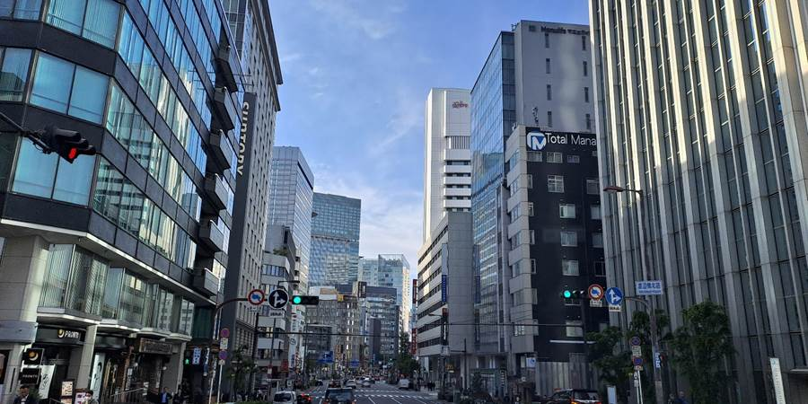
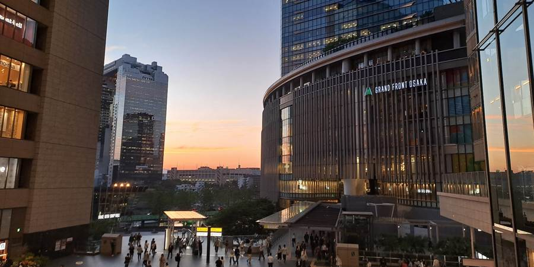
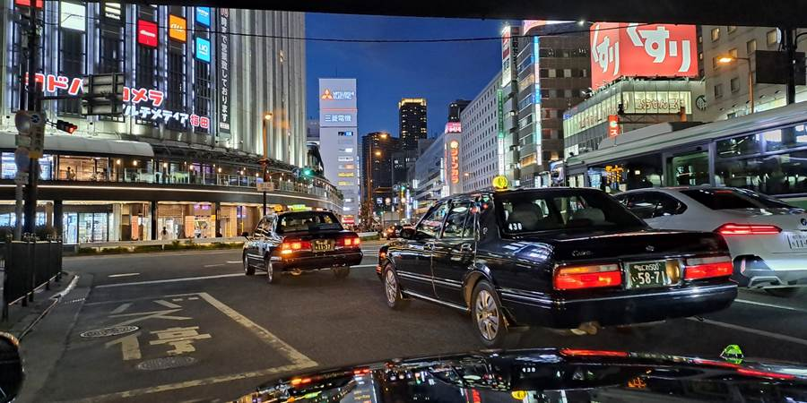
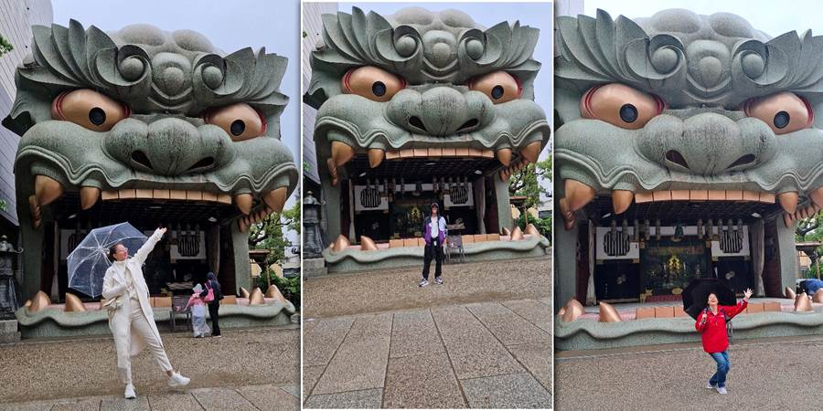
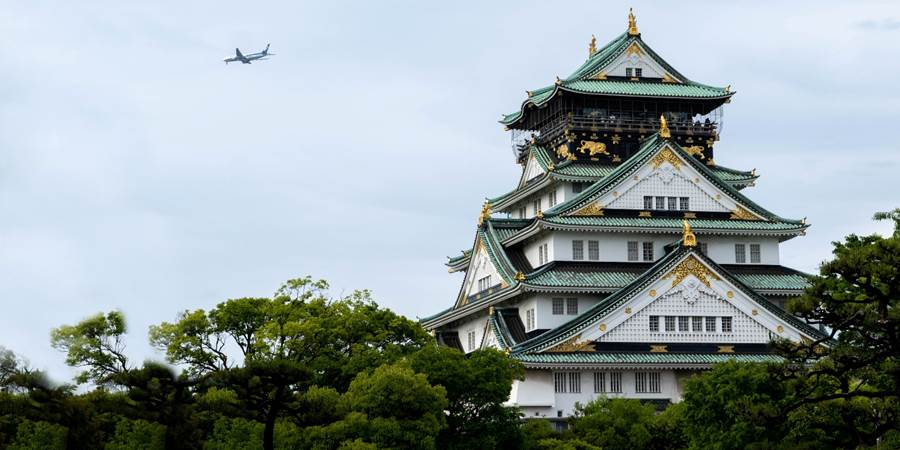
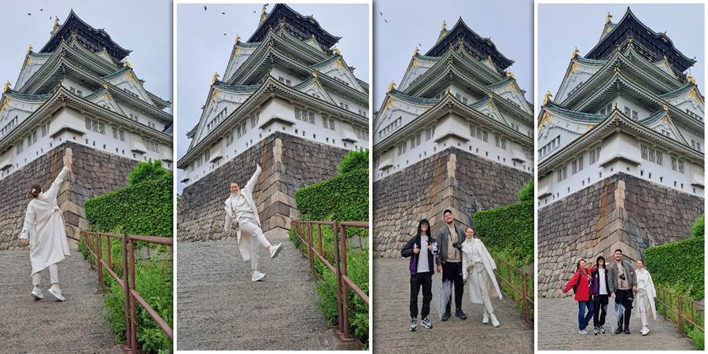
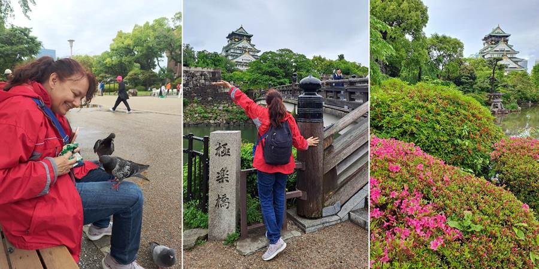
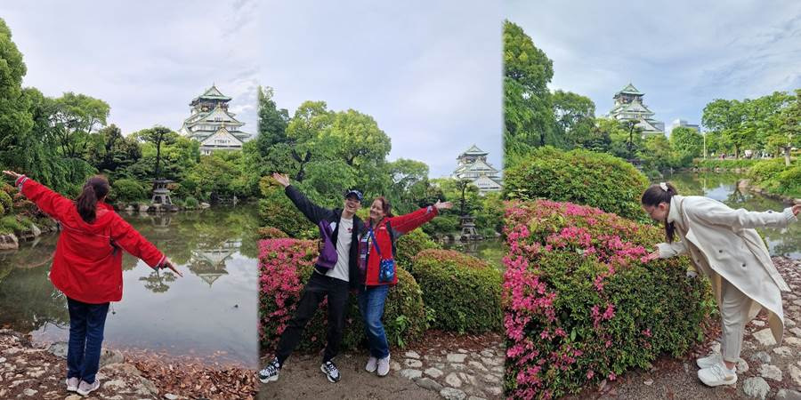
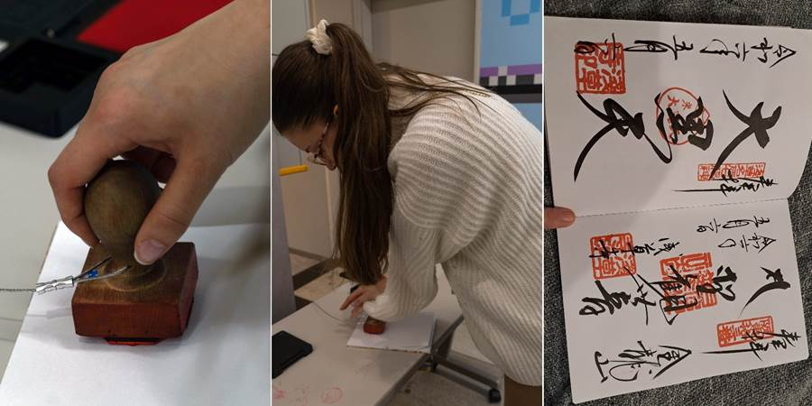

Dan jedanaesti: Zmaj, zamak i golubovi po kolenima
Stigli smo u Osaku. Odatle nam ide avion za Tokio jer avionom je jeftinije nego brzim vozom šinkansenom, a i da vidimo Osaku.
Šinkansen je 100 evra, a avion 30.
U Osaki pričaju drugačije. Oseti se. Na pokretnim stepenicama ne stoje sa leve nego sa desne strane.
Ima nebodera, Luj Vitona, Dolce Gabane, ali su značajno prljaviji od Tokia. Bučniji. Ulični prodavci skreću pažnju na sebe. Ima i uličnih zabavljača. Mi smo naišli na Spajdermena.
Kao da je Tokio princ — to mu je dato rođenjem i tako je sav otmen i fin. A Osaka je dalji siromašan rođak koji šljašteći i bukom, prenaglašeno, pokušava da skrene pažnju na sebe, a samo postaje pomalo prost i vulgaran. Nema tu finoću.
Stigli smo na železničku stanicu Osaka. Našli smo jedne od mnogo lokera (u tom momentu smo mislili da su jedini), ali zauzeti.
Šta ćemo sada? Da vučemo kofere kroz grad? Check-in u smeštaj tek u 15h.
U to nam prilazi mladić, ne govori baš najbolje engleski, ali se nudi da nas odvede do mesta gde mogu da se ostave koferi. I nije mu teško da nas vodi iako je stanica u Osaki ogromna. Jer, Japan.



Prvo smo za obilazak odabrali hram Namba Yasaka Jinjya Shrine. Hram u obliku neke ogromne, strašne, zelene glave sa iskeženim zubima.
Da li je zmajeva glava? Jedinstveno.

Sledeći je bio Osaka zamak. Zamak koji ima i svoj emotikon. 🏯




Taksista koji nas je vodio, rekao je da prvo idemo u Lawson u WC jer posle imamo dugu šetnju.
Gde drugo biste dobili takav savet.
Uhvatila sam sebe da popreko gledam ljude koji ležerno piju na ulici hodajući u gužvi, jer to u Japanu nije lepo — jesti ili piti i šetati.
Opšetali smo zamak. Seli smo na klupe, možda jedine u celom Japanu, i grickamo. Kad došli golubovi.
I to ne kao naši da stoje i gledaju. Ovi bez trunke straha sleću na kolena — i to na oba kolena po jedan, na ruku dok fotografišem.
Postoje pečati na železničkim stanicama i atrakcijama. Kristina ih skuplja u svesku, ukrasnu, kupljenu tu u Japanu. Tapacirane korice sa japanskim motivom cveća. Razvlači se ko harmonika. I slikaće u nju. Imaće lep suvenir.

Tražili smo pečat od Osaka zamka. Kažu da je gore u muzeju.
„Ne idemo u muzej,“ kažem ja na japanskom.
Onda ona ode unutra i donese nam pečat da ga samo lupimo, da ne moramo da se penjemo samo zbog pečata. Kako ljubazno!
Na železničkoj stanici deca su odmah ugledala svoje prodavnice. Posle obilaska znamenitosti vratili smo se na stanicu po stvari i u te prodavnice. Nintendo broj tri, posle Tokia i Kjota. Tu je i Pokemon prodavnica.
Ručali smo u jednom tržnom centru. Hrana je bila poprilično evropska: šnicle, hamburgeri, pohovani račići, pečeni krompir, salata sa mocarelom.
Na stanici smo tražili pečat za Kristinu. Pitali nekoga, nije znao. Prilazi devojka, pita „Stampu?“
Od našeg već čuvenog: „Sumimasen, stampu wa doko desu ka?“ — „Izvinite, gde je pečat?“
Da, ja potvrđujem, „stampu“. Opet ona „stampu?“ upitno. Opet ja „stampu“, potvrdno. I tako u krug.
Petar se šalio: „Ako još jednom kaže ‘stampu’...“
Posle nekog vremena dosetila se, izvadi telefon, prevodilac, da ja kažem na engleskom. Opet dobije „stampu“.
Kristina vadi svesku, otvara i pokazuje pečate.
„Aa, stampu!“ – kaže ona. „Sačekajte!“ i rastrča se po stanici da ga nađe.
Šta joj je teško! Došla je po nas i odvela nas do stampu. Toliko truda za običan pečat. Još jedno srce za Japan.
Najzad, uveče smo otišli i do našeg smeštaja, hostela. Soba lepa, čista, moderna. Dva velika, bračna, drvena kreveta na sprat. Ljuljaška u sobi.
WC i kupatilo zajednički, ali ih ima gomila na spratu i svi su besprekorni. Puno mladih. Zajednička prostorija kod recepcije gde se jede. Lepo. Srećni.
A još i jeftino. Kad su čuli da za nas četvoro noćenje košta 50 evra, kažu Kristina i Luka: „Doći ćemo opet!“